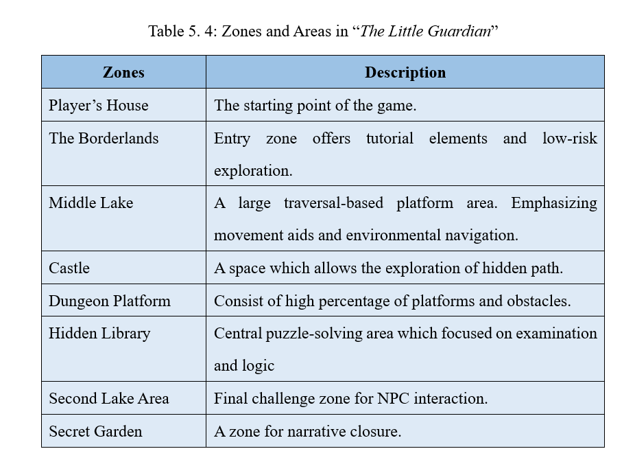
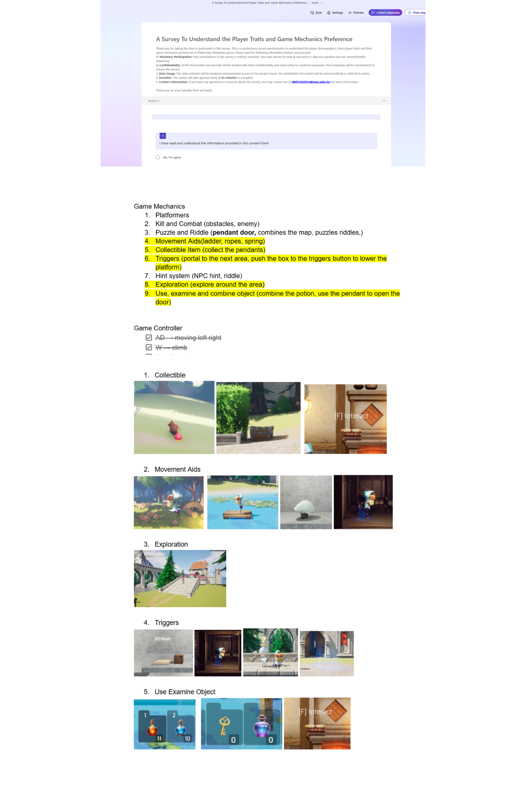
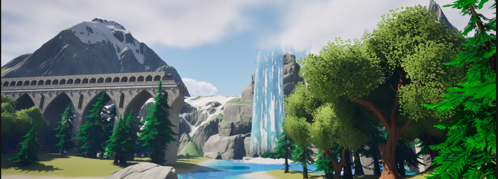
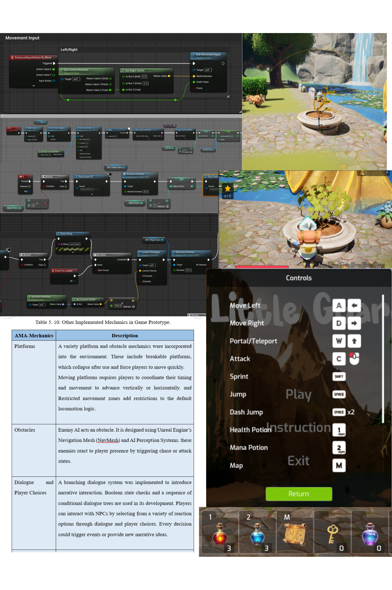
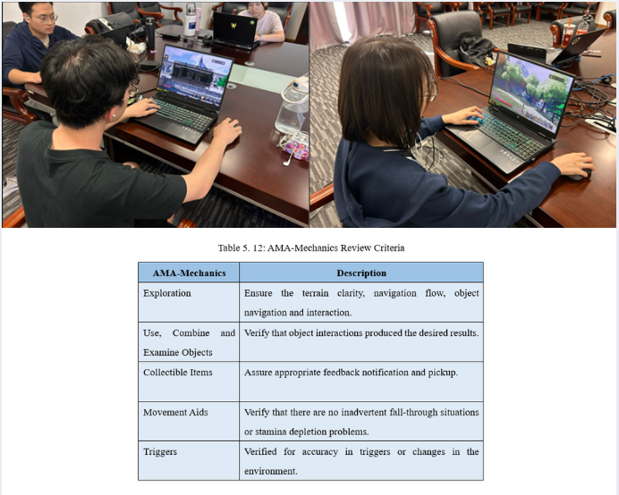

Interactive Storytelling
in Virtual Spaces
An award-winning integration of player experiences research and game prototype development at Xiamen University Malaysia.
Part I: The Overview
Gameplay & Production
Project Overview
The Little Guardian is a 3D side-scrolling platformer-adventure set in a medieval, mysterious world. The player takes on the role of a young guardian tasked with uncovering the cause of a dark curse that is draining the life from the forest. By blending platforming and RPG elements, the game invites players to embark on a journey through a semi-open world filled with secrets, puzzles, and challenges. As the mystery of the kingdom unfolds, the player must master movement, solve puzzles, and battle enemies to confront the spreading curse at the heart of the decay.
Game Highlight


Part II: Core Gameplay Experience
More Than Just a Game.
Gameplay Overview
In The Little Guardian, players engage in fluid melee combat, utilizing a combination of standard strikes and mana-based special area-of-effect (AoE) attacks. The world is filled with environmental puzzles and interactive NPCs. Players must converse with characters to uncover lore, manage their inventory, and solve location-based quests to progress. Precise movement is key, with mechanics such as dash-jumps and portals designed to challenge the player’s navigation through a semi-open 3D world.
Key Gameplay Hightlight
Branching Narrative
Features a custom-built dialogue system that allows for immersive storytelling through meaningful character interactions.
Dynamic Quest & Economy
Integrated a real-time tracking system for gold collection, item management, and multi-stage mission objectives.
Aesthetic World-Building
A vibrant Low Poly art style combined with dynamic lighting and atmospheric environmental design to create a dreamlike, mystical forest setting.

Part III: Experience Development
The Production & Development
As the sole creator of this project, I managed the full production lifecycle—balancing technical constraints with creative vision to deliver a polished 3D experience.
Ideation & Proposal
I initiated the project by defining the core vision: a synergy between dark fantasy aesthetics and player agency. This phase involved extensive brainstorming and market analysis to craft a solid project proposal that balanced creative storytelling with technical feasibility.


Player Preference Survey & Prototyping
Before development, I conducted a targeted survey to understand player mechanics preferences. This data allowed me to identify which interaction types fostered the strongest sense of agency, directly informing my game planning and core mechanic design.
Level Design & Player Flow
I prototyped levels to test player pacing and navigation before committing to final art. This iterative process allowed me to refine puzzles and platforming challenges based on early playtest feedback.

World Building & Narrative
I meticulously designed a decaying medieval world where every asset, from the weathered stone bridges to the bioluminescent flora, serves a narrative purpose. By using layered fog and dynamic lighting, I created an atmosphere that visually reflects the encroaching curse.
Gameplay Programming & Mechanics
Using C# and Unity, I developed a responsive 3D side-scrolling movement system. I focused on the "feel" of the character—weight, jump arcs, and combat impact—to ensure that the Actual Mechanical Agency I was researching was felt directly through the controller.


Testing and Execution
I conducted structured playtests with 39 participants to validate my research and gameplay. By analyzing behavioral data and player feedback, I iteratively balanced the difficulty curves and refined the "Actual Mechanical Agency" to ensure a cohesive and engaging user journey.
Part IV: The Research
Academic Thesis
Research Focus: Does Agency Mechanics Brings Engagement?
Does more freedom equal more fun? This thesis quantifies the relationship between Mechanical Agency and User Engagement. Using a mix of quantitative surveys (n=98) and qualitative playtests (n=39), I designed an Unreal Engine 5 prototype that successfully demonstrates how tailoring mechanics to specific player archetypes (Action vs. Adventure) can statistically improve the user experience.
The Research Foundation: Behind The Framework
Aim
To Investigate the relationship between player trait preferences, Actual Mechanical Agency(AMA)-mechanics, and player engagement in Platformer-Adventure games.
Objectives
To identify the top five game mechanics that are most preferred by the Aesthetic-Goal and Aesthetic-Challenge players in a Platformer-Adventure game using preliminary analysis
To develop a Platformer-Adventure game prototype incorporating the selected game mechanics using Unreal Engine.
To evaluate players perceived AMA using the Game Sense of Agency (GSoA) and analyse its relationship with player engagement using the Game Engagement Questionnaire (GEQ).
To analyse the differences in preferences for AMA-mechanics between Aesthetic-Goal player and Aesthetic-Challenge player in the developed Platformer-Adventure game prototype.
Research Question
What are the top five game mechanics that are most preferred by Aesthetic-Goal and Aesthetic-Challenge players in a Platformer-Adventure game?
How do the perceived Actual Mechanical Agency (AMA) impact player engagement among Aesthetic-Goal and Aesthetic-Challenge players in the Platformer-Adventure game?
What are the differences in the preferences of Aesthetic-Goal and Aesthetic-Challenge players with the top five AMA-mechanics in the proposed Platformer-Adventure game?
Part V: Research Findings
Insights & Validated Hypotheses
Top 5 Gameplay Mechanics RQ1
Identified through a survey of 98 participants, with Exploration ranking as the most engaging element across both groups.
Exploration
The primary driver for engagement, universally valued by all player types.
Use, Examine & Combine
Essential for deep puzzle-solving and world interaction.
Collectible Items
Critical for progression-driven satisfaction (p = 0.006).
Movement Aids
Crucial for maintaining gameplay flow and spatial navigation.
Triggers
Ensuring dynamic world reactions to player agency.
Agency & Engagement RQ2
Proven significant positive correlation between perceived Agency (AMA) and Player Engagement via Pearson’s Coefficient.
Player Traits & Engagement RQ2
AC players has stronger correlation (r = 0.542), while AG players has moderate correlation (r = 0.372), which means AC players feel more fun than AG players
Preference Divergence RQ3
"What are the differences in the preferences of AG and AC players with the top five AMA-mechanics?"
Aesthetic-Goal (AG)
Prioritizes Logic & Progression
- 1 Use, Examine & Combine
- 2 Exploration
- 3 Collectible Items
- 4 Puzzles
- 5 Hint Systems
Aesthetic-Challenge (AC)
Focuses on Mastery & Action
- 1 Exploration
- 2 Movement Aids
- 3 Triggers
- 4 Collectible Item
- 5 Use, Examine & Combine
Core Finding
While Exploration is universally valued, AG players lean towards intellectual engagement, whereas AC players demand fluid control and environmental reactivity.
Key Highlights
- Empowerment Drives Retention: Higher Mechanical Agency (AMA) statistically increases overall player engagement.
- Tailored Experiences: AG players prefer progression-based mechanics like Collectible Items (p = 0.006).
- Movement is Key: AC players prioritize exploration efficiency and Movement Aids for better flow.